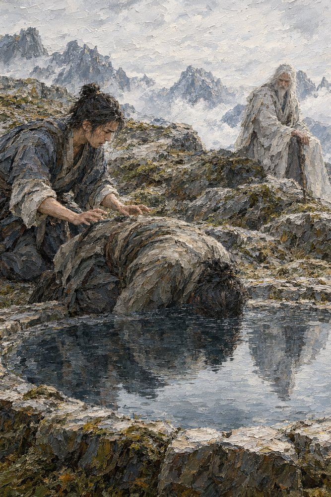

Record 11 of 11
Bai Rong lowers his face beneath the water where Kuang Zhi died, and Shen Lie counts eleven held breaths while the Hollow Hermit watches from the rock, saying nothing
A young man with a dark topknot kneels on a rocky shore with both hands on the back of a man lying face down with his head beneath the surface of a still pool, a white-haired, white-bearded man seated on the rocks behind them with a staff, snow peaks and cloud beyond.